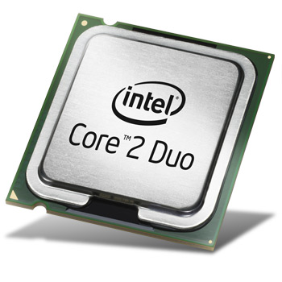

L'unité centrale de traitement appelé aussi Processeur.Il permet de manipuler et les données qui lui sont fournies.Sa puissance a une influence sur la vitesse d'exécution des logiciel et opérations effectués.Le processeur se compose en 2 parties essentielles:
Unité de contrôle:Exécute et les travaux réalisés par le processeur.
Unité arithmétique et logique: Permet d'effectuer certaines opérations sur les données (+,-,*,/,non,et,ou …)
